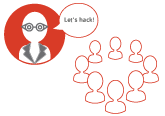
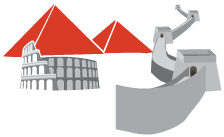

Steps
- 
Collectively explore problems and strengths of the open web in regards to believability.
Ask Learners:
- How can you believe what is written on the web?
- How do you distinguish biasm on the web?
- What should you NOT believe on the Web?
- How is information verifiable?
-
Introduce the design challenge:
There are thousands of different sources of information online. We can write anything we want and publish it for the whole world to see. What would happen if we changed historical information to display our own imaginations? We're going to build "fake" films for the Wonders of the World.
Together, make a list together of what each World Wonder film has. For example, will you rename cultural sites? Will you include a picture and a new backstory? With your learners, decide what needs to be included in the film.
-
Have learners research the Wonder they choose, and create a story about it using the list from step 3. Have learners find video footage that can serve as the visuals for their new stories. Head over to YouTube!
-

Have learners use the "basic" template to create an interactive video for the World Wonder. Allow them to collaborate to figure out Popcorn Maker and tinker around with their own ideas.
-
Examples